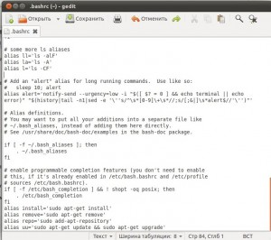

Сокращаем команды терминала через alias
Коллекция квартир в Barkli GalleryИнтерьеры от Marcel Wanders. Высокие окна. Французские балконы. Запишитесь на показУзнать большеbarkligallery.ruПроектная декларация на рекламируемом сайтеЯндекс.Директ
Если вам лениво набирать длинные строчки вроде «sudo apt-get install programm» и тому подобных, то есть простое решение с помощью файла .bashrc
Начнем:
Открываем файл .bashrc в текстовом редакторе:
Проматываем в самый низ и вставляем примерно такие строки:
alias install='sudo apt-get install'
alias remove='sudo apt-get remove'
alias repo='sudo add-apt-repository'
alias uu='sudo apt-get update && sudo apt-get upgrade'
alias up='sudo apt-get update'
alias ug='sudo apt-get upgrade'
Должно получиться примерно так:

Сохраняем файл, открываем терминал и пишем
Теперь вместо «sudo apt-get install programm» достаточно написать «install programm», а обновить репозитории и проверить обновление можно вообще 2-мя буквами : uu
При желание можно даже русифицировать все команды, но я не советую… запутаетесь в раскладке.
Я привел в качестве примера только 4 команды, при желание можно внести хоть все, а можно создать и свои например как здесь.